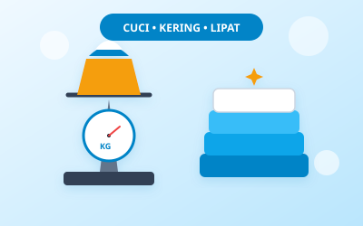
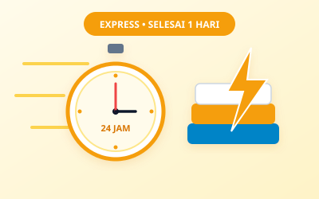
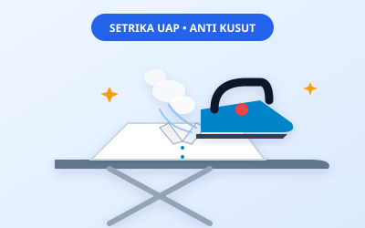
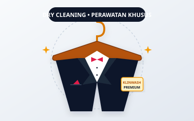
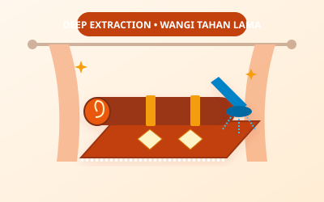

Hemat KiloanCuci Kiloan Reguler (2 Hari)
Pilihan ekonomis untuk pakaian harian Anda. Termasuk cuci bersih 1 mesin 1 pelanggan, pengeringan mesin, setrika uap, dan kemasan rapi.
Tanya LayananDaftar harga transparan untuk seluruh kebutuhan pencucian pakaian, sepatu, hingga perlengkapan rumah Anda.

Hemat KiloanPilihan ekonomis untuk pakaian harian Anda. Termasuk cuci bersih 1 mesin 1 pelanggan, pengeringan mesin, setrika uap, dan kemasan rapi.
Tanya Layanan
Best SellerSolusi cepat bagi Anda yang membutuhkan pakaian siap pakai keesokan hari. Pengerjaan diprioritaskan selesai dalam waktu 24 jam.
Tanya Layanan
Super KilatKebutuhan mendesak untuk seragam, pakaian kuliah, atau pakaian kerja. Selesai dan siap digunakan dalam waktu 6 jam.
Tanya Layanan Perawatan Khusus
Perawatan Khusus
Pencucian detail untuk sepatu olahraga, kanvas, maupun kulit menggunakan sabun pembersih khusus agar kembali bersih dan segar.
Tanya Layanan Perawatan Kamar
Perawatan Kamar
Pencucian sprei, selimut, dan bed cover tebal menggunakan tabung mesin khusus berkapasitas besar agar bersih menyeluruh dan higienis.
Tanya Layanan
Dry CleanMetode pencucian tanpa air menggunakan cairan pembersih khusus bahan formal agar bentuk bahu jas dan serat kain tetap terjaga rapi.
Tanya Layanan
Perlengkapan RumahPembersihan karpet dan gorden tebal untuk mengangkat debu yang menempel, dilengkapi pewangi khusus agar ruangan kembali segar.
Tanya LayananRingkasan informasi layanan, metode pengerjaan, dan tarif resmi KlinWash Laundry Express.
| Nama Layanan | Kategori | Estimasi Waktu | Proses Pengerjaan | Tarif |
|---|---|---|---|---|
| Cuci Kiloan Reguler | Kiloan | 2 Hari | Cuci + Pengering + Setrika Uap | Rp7.000 / kg |
| Cuci Kiloan Express | Express | 24 Jam | Prioritas antrean + Setrika Uap | Rp12.000 / kg |
| Cuci Setrika Kilat | Super Express | 6 Jam | Pencucian langsung + Setrika Uap | Rp18.000 / kg |
| Deep Clean Sepatu | Satuan | 2 - 3 Hari | Pembersih khusus sepatu + Pengeringan | Rp35.000 / pasang |
| Cuci Bed Cover | Satuan | 2 Hari | Mesin kapasitas besar + Pengering | Rp25.000 / pcs |
| Dry Clean Jas / Gaun | Satuan | 3 Hari | Cairan khusus tanpa air + Kemasan gantung | Rp45.000 / stel |
| Cuci Karpet & Gorden | Satuan | 3 - 4 Hari | Pembersihan debu pekat + Pewangi | Rp15.000 / m² |